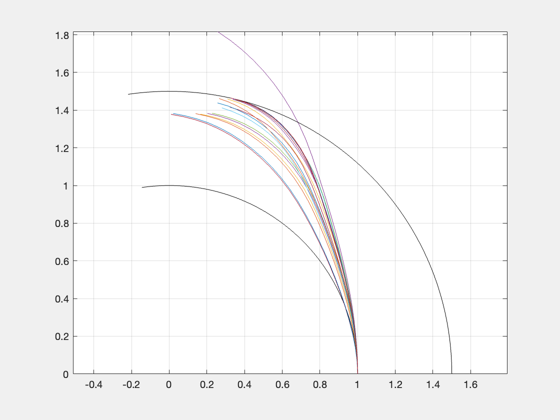
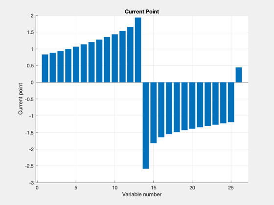
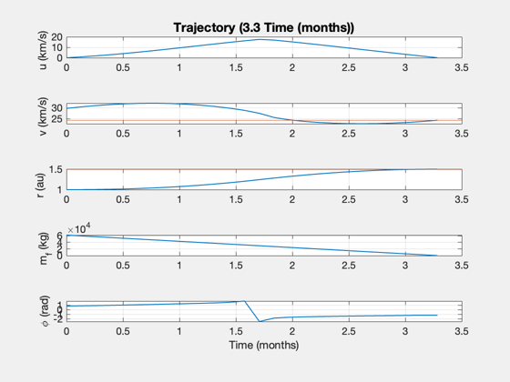
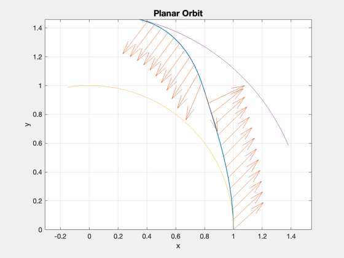

Fastest possible Mars one-way trip with fusion propulsion
This performs a planar optimization for a large-payload trip to Mars.
------------------------------------------------------------------------- See also PlanarHelioOptimal, SimulatePlanarHelioTrajectory, StraightLineReport -------------------------------------------------------------------------
Contents
%-------------------------------------------------------------------------- % Copyright (c) 2018 Princeton Satellite Systems, Inc. % All rights reserved. %--------------------------------------------------------------------------
Setup
AU = Constant('au'); YEAR = 365.25*86400; uExhaust = 80; % km/s sigma = 330; % W/kg eta = 1; % Total fusion power to thrust fS = 0.05; % tank fraction dAU = 1.5; payload = 50000; % payload mass (kg) nYears = 100/365.25; % transit time in years repeatPrevious = false;
Shortest possible trip
% Default structure d = PlanarHelioOptimal; d.sigma = sigma; % specific power, W/kg d.eta = eta; % thrust efficiency d.uE = uExhaust; % exhaust velocity, km/s d.f = fS; % fuel structural fraction (tanks) d.dVF = 0; % radial not tangential? can make soln WORSE tRet = nYears*YEAR; d.r0 = 1*AU; d.rF = dAU*AU; d.tF = nYears*YEAR; d.mP = payload; % payload mass (kg) d.scale = [1;1e3;1e3]; d.nPts = 25; if repeatPrevious [phi, thrust, t, data] = PlanarHelioOptimal( d, 4000, 'iter-detailed', thrust1, phi1 ); else [phi, thrust, t, data] = PlanarHelioOptimal( d, 4000, 'notify' ); end [~,x1] = SimulatePlanarHelioTrajectory( data.mD, data.mF, thrust, d.uE,... d.r0, d.rF, d.mu, phi, t ); h1 = findobj('name','Optimization PlotFcns'); set(h1,'name','Fast Mars Trip Optimization') data.fmincon ret.dT = d.tF; ret.dTheta = data.xEnd(end); fprintf('Trip duration: %g days\n',d.tF/86400); fprintf('Trip angle: %g deg\n',ret.dTheta*180/pi); fprintf('Mars angle: %g deg\n',x1(2,end)*180/pi); rXY = x1(1,:).*[cos(x1(2,:));sin(x1(2,:))]; dX = rXY(:,2:end) - rXY(:,1:end-1); s = sum(Mag(dX)); fprintf('Total distance traveled: %g AU\n\n',s); StraightLineReport(data) repeatPrevious = true; %-------------------------------------- % $Id: 5669bcb20a0529f7c03f9b2158065f6307f5ac8f $
1156 14.548 32.03 1.8349 -2.1828e-11
1156 14.548 32.03 1.8349 -2.1828e-11
325.29 4.5049 28.955 1.3777 9.5497e-12
321.14 4.3144 28.757 1.3824 1.6371e-11
321.64 2.5418 27.589 1.3886 0
321.92 1.7315 27.115 1.3888 1.2278e-11
322.57 1.1984 26.629 1.3973 1.9554e-11
324.44 0.98179 26.26 1.4024 -1.5007e-11
340.63 2.3 24.4 1.4395 -9.5497e-12
400.57 0.9812 24.51 1.4524 -2.4556e-11
382.24 1.5368 24.259 1.4611 1.728e-11
461.03 3.1485 24.442 1.4853 -1.8645e-11
495.13 1.418 23.828 1.4916 -3.0013e-11
548.55 0.85891 24.019 1.4964 1.0004e-11
620.12 0.15797 24.305 1.4975 5.457e-11
617.12 0.03756 24.353 1.499 -6.3665e-12
579.12 0.2724 24.326 1.5003 -3.638e-11
584.74 -0.010278 24.328 1.5001 1.9099e-11
575.53 0.00041651 24.319 1.5 1.728e-11
571.59 0.00014625 24.319 1.5 0
570.16 6.7186e-05 24.319 1.5 -1.9099e-11
570.2 9.6671e-05 24.319 1.5 -1.819e-11
569.75 -0.0001095 24.319 1.5 -2.4556e-11
569.29 -1.9337e-05 24.319 1.5 2.4556e-11
569.32 -8.8005e-06 24.319 1.5 -2.8194e-11
569.12 -2.4819e-06 24.319 1.5 2.4556e-11
569.15 7.8729e-07 24.319 1.5 -3.7289e-11
569.1 -1.205e-06 24.319 1.5 2.4556e-11
569.04 -1.9479e-07 24.319 1.5 -2.2737e-11
569.03 1.3791e-08 24.319 1.5 1.9099e-11
569.03 -3.5606e-08 24.319 1.5 -3.638e-11
569.03 4.4637e-08 24.319 1.5 -1.728e-11
569.02 4.1149e-08 24.319 1.5 1.0914e-11
569.02 4.913e-09 24.319 1.5 1.9099e-11
569.02 -1.8697e-08 24.319 1.5 2.0918e-11
569.02 1.6294e-08 24.319 1.5 1.9099e-11
569.01 7.0745e-05 24.319 1.5 -8.1855e-12
569.01 7.0745e-05 24.319 1.5 -8.1855e-12
Planar optimization results:
----------------------------
Destination: 1.5 AU
sigma: 330 W/kg
uE: 80 km/s
eta: 1
f: 0.05
Duration: 100.0 days
Thrust: 569.0 N
Distance error: 0.083 km
Velocity errors: [7.07445e-05;-2.78941e-06] km/s
Payload: 50000 kg
Engine: 68971.2 kg
Dry mass: 122044 kg
Fuel: 61453.3 kg
Total mass: 183497 kg
Total DV: 32.6255 km/s
Power: 22.7605 MW
Mars Angle: 76.5579 deg
Earth Angle: 98.5626 deg
ans =
struct with fields:
iterations: 36
funcCount: 2182
constrviolation: 0.082825
stepsize: 1.5599e-06
algorithm: 'interior-point'
firstorderopt: 0.084235
cgiterations: 326
message: 'Local minimum possible. Constraints satisfied.↵↵fmincon stopped because the size of the current step is less than↵the value of the step size tolerance and constraints are ↵satisfied to within the value of the constraint tolerance.↵↵<stopping criteria details>↵↵Optimization stopped because the relative changes in all elements of x are↵less than options.StepTolerance = 1.000000e-06, and the relative maximum constraint↵violation, 1.652958e-09, is less than options.ConstraintTolerance = 5.000000e-05.'
bestfeasible: []
Trip duration: 100 days
Trip angle: 76.5579 deg
Mars angle: 76.5579 deg
Total distance traveled: 1.69143 AU
Report:
Inputs -- --
Payload 50000 kg
Travel time 0.27 years
Specific Power 0.33 kW/kg
Exhaust velocity 80 km/s
Thrust Efficiency 1.00
Fuel Fraction 0.05
Outputs -- --
Thrust 569.01 N
Total Mass 183497.17 kg
Mass Dry 122043.84 kg
Mass Engine 68971.18 kg
Mass Fuel 61453.32 kg
Flow Rate 7.11 g/s
Power 22.76 MW
Delta V 32.63 km/s
Final Distance 1.50 AU
Final Velocity 24.32 km/s
   